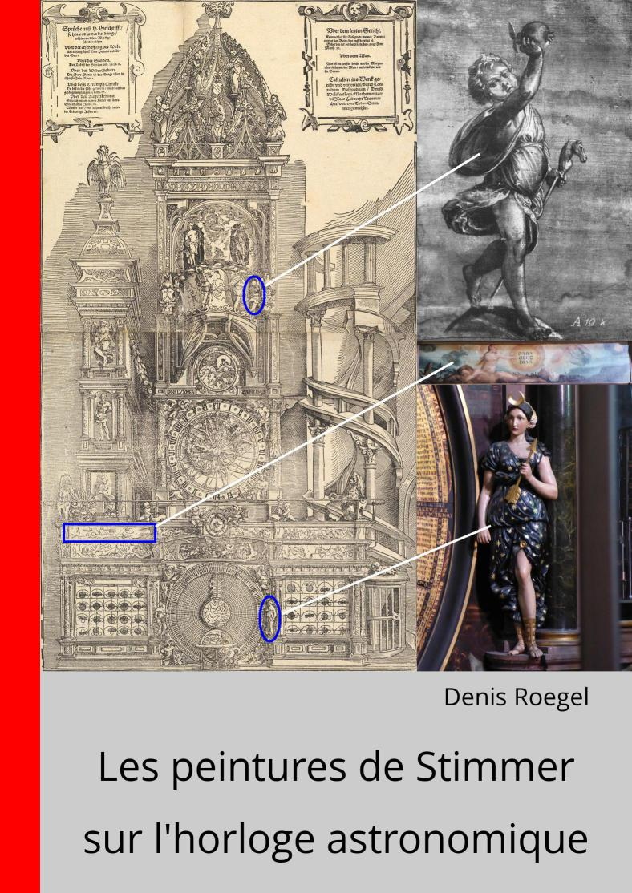

Les peintures de Tobias Stimmer
sur l'horloge astronomique
J'ai profité de l'exposition
consacrée à la Renaissance 1560-1600 à Strasbourg
par les musées de Strasbourg en 2024 pour achever mon étude sur
les peintures de l'horloge astronomique de la cathédrale
de Strasbourg.
Denis Roegel : Les peintures de Tobias Stimmer
sur l'horloge astronomique de la cathédrale de Strasbourg, 2024.
774 pages et plus de 500 illustrations.
(version préliminaire actuelle 0,
28 juin 2024) (78 Mo au total)
ISBN : 979-10-415-3280-3.
Cet ouvrage a été publié pour la première fois le 31 janvier 2024
et est uniquement disponible hors commerce.

Il se compose des parties suivantes :
- Introduction générale (pages 1-18)
- Les peintures de Stimmer sur l’horloge (Stolberg, 1898)
(pages 19-160)
- Le contexte artistique de Stimmer (pages 161-194)
- Les sources de Stimmer (pages 195-642) :
- La création d'Ève (pages 197-228)
- L'eschatologie (pages 229-326)
- Grisailles (pages 327-434)
- Éléments sculptés (pages 435-502)
- Les peintures de la tourelle des poids (pages 503-542)
- Les éléments astronomiques et calendaires (pages 543-648)
- Conclusion (page 649)
- Bibliographie (pages 651-728)
- Annexes (pages 729-760)
Documents complémentaires :
- Première version préliminaire en ligne
(version -1, 31 janvier 2024, 662 pages, 60 Mo) :
- La seconde version préliminaire (-0.9) n'est plus en ligne,
mais peut être fournie sur demande.
- La troisième version préliminaire (version -0.8, 18 mars 2024, 748 pages, 77 Mo) n'est aussi plus disponible que sur demande, et seuls les extraits
suivants sont disponibles :
- La quatrième version préliminaire (-0.7, 16 avril 2024, 764 pages) n'est plus en ligne,
mais peut être fournie sur demande.
- La cinquième version préliminaire (-0.6, 22 mai 2024, 774 pages) n'est plus en ligne,
mais peut être fournie sur demande.
- Erratas
- The ”Villarceau circles” in Uhlberger’s staircase (ca.
1580), 2014
- A note on the motion of Mars on the second
Strasbourg astronomical clock, 19 May 2023
- Le comput de Schwilgué de 1821
- Les vitraux de la cathédrale de Strasbourg
- Recensement de tables mathématiques et astronomiques
Historique des versions :
- La première version préliminaire (-1) a été mise en ligne
le 31 janvier 2024. Cette première version est conservée ici
pour mémoire, à titre de comparaison avec les suivantes.
Elle a été réalisée sans connaissance du contenu de l'exposition
dont le vernissage a eu lieu le 1er février 2024.
- La version préliminaire -0.9 a été mise en ligne
le 15 février 2024. Elle complète la version -1 par des illustrations
de toutes les grisailles (photographiées à l'exposition),
et de toutes les statuettes (aussi photographiées à l'exposition).
Elle tient aussi compte du catalogue de l'exposition et corrige
diverses coquilles (notamment toutes celles de l'errata
en date du 15 février).
- La version préliminaire -0.8 a été mise en ligne
le 18 mars 2024. Elle complète la version -0.9 par des détails
des grisailles, notamment des coutures, des pièces rapportées,
etc. Elle propose une hypothèse de reconstitution de la forme
originelle des grisailles de Stimmer qui n'avait jamais été
envisagée à ce jour, où l'ordre des chars n'est pas celui
présenté à l'exposition de 2024.
Elle comporte aussi des compléments sur les statuettes
exposées en 2024. Enfin, il s'agit de la première version
où toutes les sources astronomiques de Dasypodius sont données,
ce qui n'avait jamais été fait à ce jour.
- La version préliminaire -0.7 a été mise en ligne
le 16 avril 2024. Elle complète la version -0.8 par des détails
sur les grisailles, des informations sur la structure des
statuettes et diverses corrections mineures.
(Cette version existe en deux variantes,
une phrase ayant été supprimée de la page d'avertissement précédant
le titre intérieur ce même jour, suite à la réception des radiographies
par le C2RMF. Ces radiographies seront incluses dans la prochaine
version de ce livre.)
- La version préliminaire -0.6 a été mise en ligne
le 22 mai 2024. Elle complète la version précédente
par cinq radiographies des statuettes réalisées au C2RMF
et reproduites avec l'autorisation du C2RMF. Nous avons aussi ajouté
la gravure d'Étienne Delaune sur les quatre monarchies, certainement
inspirée du travail de Stimmer. Enfin, cette version est complétée
d'un nouveau site proposant un parcours exhaustif de l'exposition
au musée de l'Œuvre Notre-Dame.
- La version 0 a été mise en ligne le 29 juin 2024. C'est la première
à disposer d'un ISBN.
Pour me contacter : utilisez l'adresse obtenue en prenant mon nom
de famille seul, suivi de la première lettre
du mot « contact » apparaissant deux fois
dans ce mot, suivi de l'extension du service de mail de Google.
Dernière modification : 1er octobre 2025.